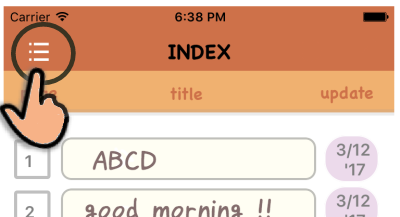
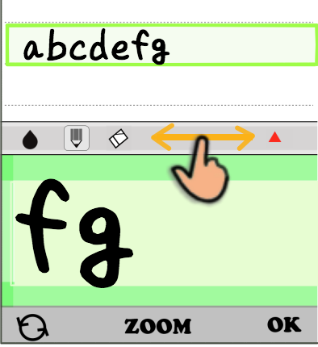

First of all, please read this guide first
Thank you for using Notepad application for handwritten character input,
HappyMemo.
By adopting "Input palette of enlarged size" and "Function to edit input sentence",
you can easily draw characters even at your fingertips and realize the necessary practicality for notepad.
Introduction
HappyMemo is a new type of notepad that does not use a keyboard.
In order to handle analog (image) characters, there are several unique functions as below.
1) Input-Palette

When drawing characters, use the input area (Input-Palette) appearing from the bottom.
Since the pallet size is four times the memo line,
only a part of it can be seen on the smart screen.
Therefore, to see the entire memo line, scroll the palette itself left
and right by tracing the scroll bar at the top of the palette.
If you tap the ZOOM button under the palette, the pallet size will be 1.5 times more.
This function is an effective means for writing complicated kanji etc.
2) Correct the written characters
HappyMemo has a function to correct once written letters and sentences.
Tap ▲ on the right end of the scroll bar at the top of the Input-Palette to display a red translucent "Edit-Panel".
Four types of edit modes (overwrite, insert, delete, clear) are arranged on this panel with icons, and you can select and edit the necessary method from this.Of course you can edit already written sentence as well.
for example :
Overwrite (OVW) mode：
3) Various gesture operations
To realize light operation, HappyMemo offers several gesture operations.
For example,
"SWIPE" gesture :
-Page turning action
"Long press" gesture :
-Display selected memo line on palette
"Edge Swipe" gesture :
-Automatically adjust the pallet position for easy input.
In addition, there are also gestures such as
display/non-display of pallet and line feed operation.
Screen and Button
In HappyMemo, the two screens,
the memo screen and the index screen, are the basic screen.
When you start up the application, the last edit page opens.
Then, open "Input-Palette" or "Edit-Panel" on this memo screen,
and start the input work.
- Startup screen -
[1]：Input-Panel ON/Off Button
[2]：menu Button
[3]：page Number（Display only）
[4]：Index-page display Button
- Input-Palette -
[5]：Line selection Curso
[6]：Input-Palette
[7]：OK Button
[8]：Palette magnifying Button
[9]：Undo/redo Button
[10]：Scroll-Bar
[11]：Edit-Panel On/Off Button
[12]：Pen color change Button
[13]：Pen mode selection Button
[14]：Correction-pen selection Button
- Edit-Panel -

[15]："Over Write" mode Button
[16]："Insert" mode Button
[17]："Delete" mode Button
[18]："Clear" mode Button
[19]：To the beginning of the sentence
[20]：To the beginning of the sentence
[11]：When the Edit-Panel is displayed,
the button changes to "Close Panel" button.
- Index Page -
[21]：Each page content is displayed
as a table of contents
[22]：Page Number
[23]：Last update date of each page
Tap the button [4] to close the index and return to the original "memo page".
- Menu Screen -
[25]：Add today's date to the first line
[26]：Clear all current page contents
[27]：Save the current page as a Jpeg file
[28]：Open the "Setting screen"
[29]：Open the Start-Guide
[30]：Close the this menu
- Setting Screen-
[Drawing line Width]：
thin line, standard (default), thick line
[Drawing line color]：
Select the third color (default: blue)
[Auto scroll]：
On: Used (Initial value)/ Off: Not used
[Delete all pages]：
Clear the contents of all pages and initialize settings
After changing the setting, the new value is saved with "Set".
Changing contents will be canceled if you select "Cancel".
- Start-Guide -
[31]：Scroll to the top of the screen
[32]：Return to memo page
[33]：Select Japanese
[34]：Select English
Tap the
△
mark in the document to return to the Top menu.
(In the case of
◁
mark, it returns to the section menu.)
Basic operation
Here, we will explain the basic usage of HappyMemo.
- Move to the desired page
- Display page line in palette
- Write characters on the palette
- Update page line
- Scroll the palette
- Add characters
- Begin a new line
- Change drawing pen
- Correct the written characters
- Close the Input-Pallet
- Add date to title line
- delete page contents
- Save the page contents
1. Move to the desired page
There are three ways to open a page as follows.
Then combine these methods to go to the desired page.
① When launching this application, the last edited (input, modified) page is displayed.

② Move by page turning gesture.
[Swipe from right to left] :
- Go to next page

[Swipe from left to right]：
- Back to previous page

③ Move from index (table of contents).
Tap the
 icon in the top bar of memo page to open the index page.
icon in the top bar of memo page to open the index page.
- Scroll up and down the index page to find the desired page number.

- If you press and hold that page title (more than 1 second) it will go to that page.
- Tap the
 icon again to return to the original memo page.
icon again to return to the original memo page.

2. Display page line in palette
Tap the
 icon at the right end of the menu bar of the memo page.
icon at the right end of the menu bar of the memo page.
The input palette appears from the bottom of the screen.
- Then, the first line is selected and the contents are enlarged on the palette.
- On the memo page, when you tap the target "line", the "green" cursor moves to that line
and its contents are displayed on the palette.
(Of course, nothing is displayed in the case of a blank line.)
Next I will write (draw) characters on this palette.
[H]:Start mark of pallet
[G]:Guard bar
(Area where writing start is impossible)
3. Write characters on the palette
The input area of the pallet is within the area sandwiched
between the upper guard bar and lower guard bar.
And write characters here.
※ At this timing, the contents of the palette are not reflected in the memo page yet.
If the drawn characters are incorrect, we will continue to make corrections.
( See 9.Correct the written characters)

- Tap the ZOOM button under the palette to enlarge
the palette screen further.
You can enter comfortably if you use it for writing complicated kanji and fine characters.

- To restore the display size, tap the ZOOM button again, or tap the
 icon.
icon.
4. Update page line
Tap the OK button at the bottom right of the screen to copy the contents of the palette onto the memo page.
※If you find a correction point at this time, please correct it on the pallet again.
When correction is completed, tap the OK button again to reflect it on the memo page.

5. Scroll the palette
When you continue adding characters, scroll the "Scroll-Bar" at the top of the palette
to secure the place to write letters.
(Shift palette contents to the left)

6. Add characters
You can add additional sentences here. However,
it is not reflected onto the memo page yet.

- Tap the OK button in the lower right of the screen
to copy the added characters to the memo page.
After that, you can continue to write additional characters in the same way.

7. Begin a new line
If you want to change the selection line or line break,
hold the palette open and tap the next "memo line".

8. Change drawing pen
(1) To change the drawing line color,
tap the "water drop" mark at the top left of the palette.
Every time you tap it changes as follows
→  →
→  → ※
→ ※
※(Return to the first color)

(2) Change the drawing line width from the "Setting screen".
- Select "Settings" from the menu icon
on the menu bar on the screen.
- In the "LINE WIDTH" item on the "Settings-Screen"
Select the desired width from "thin", "normal", "thic", and tap the "Decide" button.
9. Correct the written characters
There are two main ways to edit the drawn characters.
(1) Erase unnecessary lines with "Correction-pen".
- Tap the
 icon to change the line color to the background color. Overwriting in this state can be used as an "eraser".
icon to change the line color to the background color. Overwriting in this state can be used as an "eraser".
When editing a thin part, change the thickness of the line to "thin".

After correcting, tap the
icon and return to "pen mode" again. Then draw and add the necessary lines.
(2) Edit characters with "Edit-Panel"
This section explains the basic procedure.
( See "About the Edit-Panel"/Top menu)
① Tap the
icon at the top of the palette to display the Edit-Panel.
② Select the desired mode from the four types of edit mode:
OVW (overwrite), INS (insert),
DEL (delete), CLR (blank).

③ Next, drag on the palette to adjust the cursor width (range to be edited).

④ Tap the " OK " button under the palette
to start editing and display the results on the palette.

※ "Edit result" differs depending on "edit mode".
The following is an example of the editing result.
Overwrite mode:

Insert mode:
Delete mode:

Blank mode:
- Check the editing result and repeat the similar work if necessary.
- When editing is completed, tap the OK button
to copy the palette contents to the memo page.
10. Close the Input-Pallet
Once you have finished entering characters, close the palette once.
- To close the palette tap the palette icon
on the menu bar on the screen.
※ Also, when the palette is displayed, you can also close the pallet
by pressing and holding any memo line.
11. Add date to title line
The first line of the page can also be used as a "title line". In that case, you can attach a date to the title line.
- To add a date, select "Add date" from the menu bar menu
on the screen. Today's date is added to the right end of the first line.

12. delete page contents
(1) Delete the contents of an open page
- Choose "Clear Display Page" from the menu
on the menu bar on the screen.
All the contents of all the lines (30 lines) of the open page become blank.
(2) Delete all contents of all pages
- Choose "Settings" from the menu
on the menu bar on the screen.
Open the "Settings" screen, select "Delete-All" in the "Delete-All Pages" item, and tap the [Set] button.

※ If executed, all contents of all pages will be erased and various set values will be reset, so please be careful.
13. Save the page contents
The contents written on the page are normally all saved automatically. In addition, open pages can be saved as external image files (jpeg format)
- Choose "Export as JPEG file" from the menu
on the menu bar on the screen.
A confirmation dialog will appear. When you are done, the following completion message will be displayed. I will do it again.
- The file is saved in the "Photo" folder. The format is as follows for iPhone.
※ If the interface environment meets,
you can open this file and print it or send it via e-mail.

Gesture operation
Many gesture operations are prepared with this application to realize light operation.
The gesture operations available in HappyMemo are explained below.
- Gesture on Memo-page screen -
① Scrolling the screen:
* Swipe up and down on the memo page screen.
Swipe vertically on the memo page screen
to scroll through the display contents.
② Page turning：
* Swipe left and right on the page screen.

Swipe horizontally on the memo page screen
to move the page back and forth.
- Swipe left: Go to the next page.
- Swipe right; return to the previous page.
③ Display palette:
* Long press the target memo line.

If you press and hold a memo line when the palette is not displayed,
two actions, "Open Palette" and "Show Contents of Selected Line"
are executed at once.
④ Scroll the palette 1：
* Swipe the Scroll-Bar

Swipe the "scroll-bar" at the top of the palette left or right
to scroll the entire palette screen left and right.
⑤ Scroll the palette 2：
* Edge swipe(←) at the right end of the palette
Swipe the right edge of the palette from the outside to the inside.
- The palette is automatically scrolled to the left and the end of the sentence
moves near the left edge of the screen
※ This function is particularly effective when adding characters continuously
to the end of a sentence.
⑥ Scroll the palette 3：
* AUTO-SCROLL function
When the drawing line enters the right end area (area A in the figure below),
the palette will automatically scroll to the left direction at the touch up timing.

- Automatic scrolling moves the end of the sentence near the left edge of the screen.
This allows you to quickly and comfortably add characters in sequence.
※ To stop the "AUTO-SCROLL" function, turn off the setting from "Settings" in the menu list.
(Default：ON）
⑦ Begin on a new line 1：
* Tap a memo line
When the palette is displayed, tapping the memo line moves the "green cursor" to the selection destination and its contents are displayed on the palette.
※ Please note that if you change the memo line before reflecting the contents of the palette
on the memo line, the contents of the palette will be canceled.
⑧ Begin on a new line 2：
* Edge Swipe(↓)
When you slide down (swipe) in the right end area of the palette screen, the "green cursor" moves down one step and its contents are displayed on the palette.
※ Unlike ⑦ in this gesture motion, the contents of the previous palette display are automatically copied to "memo line" even before it is confirmed.
You can process [Confirm Palette Contents] + [Line feed] with one action.
⑨ Close the pallet：
* Touch and hold any memo line.
- You can close the pallet by long pressing any "memo line" while the palette is displayed.

- Gesture on Index-page screen -
① Scroll the screen (up and down)：
* Swipe (↑ ↓) on the index screen.
You can scroll the display contents by swiping up and down on the screen like the Memo-page screen.
② Open the target page：
* Press and hold the page title you want to open.
If you press and hold the desired page-title line(more than 1 second),
it will move to the Memo-page of that page number.

About the Edit-Panel
The character handled by HappyMemo is so-called "line drawing",
but you can perform editing work such as
"overwrite", "insert", "delete" etc.
by using the "Edit-Panel" of this application,
like an ordinary text editor
How to open the Edit-Panel
- Tap ▲ button at the right end of the scroll bar
at the top of the "Palette" to display a red translucent "Edit-Panel".

Icon types and functions on the Edit-Panel
[ Mode selection button ]

OVW：" Overwrite mode "

INS：" Insert mode "
DEL：" Delete mode "

CLR：" Blank mode "
[ Edit range expansion button ]
" To the beginning of the sentence "

" To the end of the sentence "
What is Palette-cursor ?
If you select one of "edit mode" and "drag" on the palette,
a rectangular cursor will be formed on the screen. (hereinafter referred to as Palette-cursol)
- The shape of the cursor is a rectangle surrounded by the start and end points of the drag.
In addition, when repeating the drag, only the cursor by the final drag remains on the screen.
Therefore, you can change the cursor position by dragging a new line.
- Then, place the Palette-cursor on the part of the written sentence you want to edit,
and execute the selected editing process.
Procedure of editing work
The detailed procedure for editing the characters written on the palette is explained below.
① First, select the "memo line" to edit and display it on the palette, tap
 button
on the scroll bar to open "Edit-Panel".
button
on the scroll bar to open "Edit-Panel".
② Next, tap the icon in the Edit-Panel and select "edit mode" you want to run from now.
③ Drag on the palette to adjust the range of the cursor (the part you want to edit).
④ Finally, touch the " OK " button at the bottom right of the palette to execute the editing process.
(Editing results will be displayed on the palette immediately)
Reference example
The content of "memo line" before editing is
" I have a Pineapple-pen . ",
Ultimately change this to
" I have an Apple-pen . "
Below is an example of how to perform this change processing
using various edit modes.
Content before editing
The Edit-Panel is already open.
1) First, remove "Pine" from "Pineapple".
Slide the scroll bar to display "Pine" on the palette.
Delete unnecessary characters
2) Tap the
icon
on the Edit-Panel to select "Delete" mode. Next, drag on the palette screen to create a black cursor.
Then tap the OK button to hide the "Pine" character with this cursor.

On this palette, the character "Pine" has been deleted.
(At this time, the edit pallet is closed automatically.)
Replacing characters
Next, capitalize the first character of "apple".
3) Tap the
button
to open "Edit-Panel".
Then, tap the
icon
in the Edit-Panel to select "Overwrite" mode.
This time a white cursor is created by dragging.
Hide the first letter "a" with a white cursor and tap
the OK button.
This time "a" will change to "blank" space.
(The edit pallet is automatically closed.)
4) When the Edit-Panel is closed,
It automatically switches to pen-input mode,
so add the capital character" A "to this space.
Again (tap OK ) button.
The palette display contents are copied to the memo page.
And you can check the contents of the entire line.

5) Here you can see that it is necessary to change "a" to "an".
So add "n" between "a" and "Apple-Pen".
Move position of sentence
However, this time, since the space between "an" and "Apple" is too narrow,
it became necessary to add space between them.
6) Tap
button
again to open "Edit-Panel".
Next, tap
on the Edit-Panel and select "Insert" mode.
Now a translucent cursor is created by dragging.

7) Adjust the translucent cursor width by the amount of space you want to insert.
Then, tap the OK button.
As a result,
the characters following "Apple" moves to the right by this cursor width
in the palette display.
Check the entire characters
8) To confirm the editing progress, tap the OK button.
The palette display contents are reflected (copied) on the memo page.
With this, I got "I have an Apple-Pen."
(Which is the editing goal)
◇ Editing operation tips ◇
１.How to indent line characters
- Open the Edit-Panel and tap the
icon
to select "Insert" mode.
Drag from the left edge of the palette and create a cursor for the indentation.
- Tap the OK button twice
to write it out on the memo page and confirm.
You can see that indentation is done by the width of the cursor.
２.
How to use the
and
icon
These two icons on the Edit-Panel can be used only when
the cursor is displayed on the palette screen.
- Tap the
or
icon ,to extend one end of the cursor
to the "beginning of the sentence"
or to the "end of the sentence".
(※ It does not matter if the beginning of a sentence
or the end of a sentence is not displayed on the palette screen.)
The following explains the case of "Delete from the middle of a sentence
to the end of a sentence" as an example.
① First, open the Edit-Panel and select Delete mode.
② Drag from the beginning of the range you want to delete,
and create a cursor.
The size of the cursor can be set to any small size.

③ Then tap the
icon.
Although it is not displayed on the palette,
the right end of the cursor is expanded to the end of the sentence.

④ Tap the OK button. The cursor area is deleted on the palette screen.

If you tap the " OK " button again,
the palette screen will be reflected on the memo line.
You can confirm that "Apple" to the end of the sentence have been deleted.

※ Use the same for the other
as well.
However, in this case one end of the cursor is expanded to "beginning of sentence".
。
３.
How to use blank-mode
① Tap the
icon on the Edit-Panel to select "blank" mode.
② Tap the " OK " button to erase all the characters on the palette.
③ Tap the " OK " button again.
The contents of the palette are reflected on the memo line,
That is, the memo line is a blank line.

4.Cancel editing result
Since the result edited by the edit panel operation is different
from the prediction, you may want to undo it.
- Immediately after the edit result is displayed on the palette,
By tapping the
button
at the bottom left of the screen you can cancel the editing result.
It returns to the state before editing.
( See "Usage of cancel button"/Top menu)
Usage of cancel button
The " Undo-Button "
on the bottom-bar of the palette is the "Undo/Redo" button.
It only appears when the palette is open.
You can cancel the previous editing process.
Each time you tap this button,
the display contents of the palette will return to "previous state".
(Therefore, if you tap twice consecutively,
the display content will return to its original state)
The figure below shows this function.
What is the "previous state" ？
Three conditions (situation) are necessary for this "cancel" button
to be effective in this application.
And, depending on each "situation", the "previous state" is different.
- Three kinds of situations are distinguished as shown below.
１）character drawing：
A situation where you are handwriting on the palette.
２）characters editing：
A situation of editing characters on the Edit-Panel.
３）reflecting onto memo：
A situation immediately after copying the contents of the palette
to the memo line.
※ It is summarized in the table as follows.
|
Situation |
Previous State |
| 1 |
*character drawing
Immediately after touch up |
before drawing final stroke |
| 2 |
*characters editing
Tap the
OK
and immediately after the editing result is displayed.
| Palette contents before editing begins |
| 3 |
*reflecting onto memo
Immediately after tapping
OK
and copying the palette to the memo |
Contents of memo line before copying |
Example when tapping
button
１）When handwriting on the palette
※ Final stroke canceled.

２）When using the edit panel
※ The operation result on the edit panel is canceled.
３）When reflecting the contents of the palette on the memo line
※ First, add "def" after the contents "ABC" of memo line.
- Draw "def" on the palette.
- Here, when the OK button is tapped,
the contents of the palette are reflected in the memo line.

- Immediately after this, if you tap the
button,
the contents reflected immediately before the memo line are canceled.
- On the palette, the contents of "memo line" will be displayed again.
What is this app used for?
Application example
- Memorandum Notes
- ToDo list
- Notes while listening to lectures
- Schedule chart
- Drafts such as composition
- shorthand
- Easy record, diary etc
Future improvement plan
We are planning such as.
- Landscape orientation for iPad mini and iPhone
- Improved editing function of memo page
- Manage multiple notepads